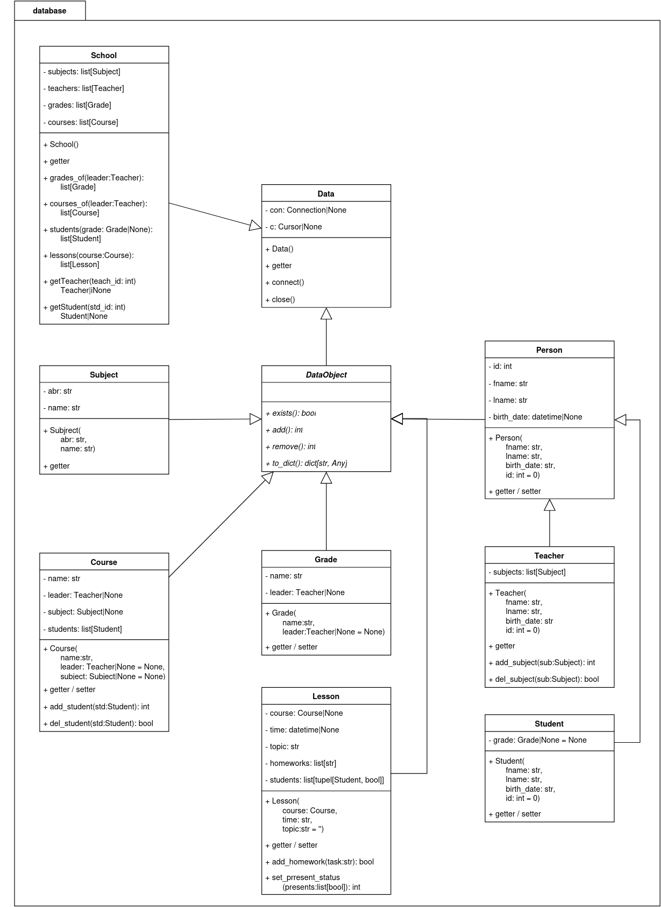

Paket: database
- database.indb()
Initialisiert die Datenbank.
Wichtig
Die gasamte Datenbank wird dabei durch eine neue ersetzt. Diese Funktion wird auch in Pytests verwendet. Sobald reale Daten existieren, sollten keine Pytests mehr durchgführt werden.
UML-Klassendiagramm
Module: data
- class database.Data
Stellt eine Datenbankverbindung zur Verfügung.
- property c: Cursor | None
Verwaltet den Datenbankzeiger.
- Getter:
Verweist auf den Datenbankzeiger
- Rückgabe:
None, wenn dieser noch nicht gesetzt ist
- close()
Trennt die Datenbankverbindung wieder.
- Rückgabetyp:
None
- property con: Connection | None
Verwaltet die Datenbankverbindung.
- Getter:
Stellt die Databankverbindung bereit
- Rückgabe:
None, wenn keine Verbindung beteht
- connect()
Stellt eine Verbindung zur Datenbank her.
- Rückgabetyp:
None
- class database.DataObject
Repräsentiert eine Datenbankentität.
- abstractmethod add()
Fügt ein neues Objekt zur Datenbank hinzu.
- Rückgabetyp:
int- Rückgabe:
- 0 - erfolgreich1 - Daten sind nicht Validiert oder nicht im gültigen Format2 - Beziehende Referenzen sind nicht vorhanden3 - Objekt existiert bereits4 - Datenbankfehler
- abstractmethod exists()
Prüft, ob das aktuelle Objekt exitiert.
- Rückgabetyp:
bool- Rückgabe:
True, wenn das Objekt bereits vorhanden ist
- abstractmethod remove()
Löscht das akuelle Objekt aus der Datenbank.
- Rückgabetyp:
int- Rückgabe:
- 0 - erfolgreich1 - Objekt ist nicht Vorhanden2 - Objekt kann nicht gelöscht werden, da noch Referenzen vorhanden sind4 - Datenbankfehler
- abstractmethod to_dict()
Liefert die Attibute des Objektes für das Frontend.
- Rückgabetyp:
dict[str,Any]- Rückgabe:
Daten als Wörterbuch
Module: subject
- class database.Subject(abr, name='')
Repräsentiert ein Unterichtsfach.
- Parameter:
abr (
str) – Abkürzung in der Datenbank (3 Buchstaben)name (
str) – Langbezeichnung (muss mit Großbuchstaben beginnen)
- property abr: str
- Getter:
Liefert die Abkürzung in der Datenbank
- add()
Fügt ein neues Fach zur Datenbank hinzu.
- Rückgabetyp:
int- Rückgabe:
- 0 - erfolgreich1 - Ungrültige Daten3 - Fach bereits vorhanden
- exists()
Prüft, ob das Unterrichtfach bereits existiert.
- Rückgabetyp:
bool- Rückgabe:
True, wenn das Fach bereits vorhanden ist
- property name: str
- Getter:
Liefert die Langbezeichnung des Faches
- remove()
Löscht das akuelle Objekt aus der Datenbank.
- Rückgabetyp:
int- Rückgabe:
- 0 - erfolgreich1 - Objekt ist nicht Vorhanden2 - Objekt kann nicht gelöscht werden, da noch Referenzen vorhanden sind4 - Datenbankfehler
- to_dict()
Liefert die Attibute des Objektes für das Frontend.
- Rückgabetyp:
dict[str,str]- Rückgabe:
Daten als Wörterbuch